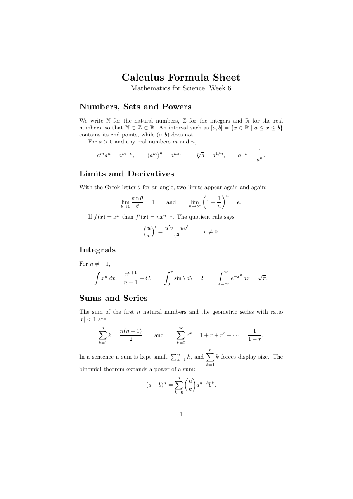

วัตถุประสงค์
เมื่อจบ Workshop นี้ นักศึกษาจะสามารถ
- เขียนคณิตศาสตร์ในบรรทัด (
$...$) และแบบแยกบรรทัด (\[...\]) และบอกความต่างของทั้งสองแบบได้ - เขียนเลขชี้กำลัง ตัวห้อย เศษส่วน ราก และสัมประสิทธิ์ทวินามได้
- เขียนผลรวม อินทิกรัล และลิมิตพร้อมขอบเขตได้
- ใช้อักษรกรีก สัญลักษณ์ความสัมพันธ์ เซต และวงเล็บที่ปรับขนาดตามเนื้อหาด้วย
\leftและ\rightได้ - เพิ่มข้อความและช่องว่างในโหมดคณิตศาสตร์ด้วย
\text,\quadและ\,ได้
ไฟล์ที่ได้รับ
ดาวน์โหลด math_expressions.zip แล้วแตกไฟล์ไว้ในที่ที่หาง่าย จะได้โฟลเดอร์ math_expressions ดังนี้
math_expressions/
├── doc.pdf ชิ้นงานต้นแบบ (1 หน้า)
├── warmup.tex ไฟล์สั้น ๆ สำหรับ Part A
├── main.tex ไฟล์เริ่มต้นสำหรับ Part B
└── content.txt เนื้อหาของ Part B (สูตรเขียนแบบข้อความธรรมดา)ดูไฟล์แยกทีละไฟล์ได้ที่
warmup.tex,
main.tex,
content.txt
เตรียมเครื่อง
ประมาณ 5 นาทีใช้เครื่องมือชุดเดียวกับ Workshop ก่อนหน้า เปิดโฟลเดอร์ math_expressions ใน Sublime Text และเปิดเทอร์มินัลในโฟลเดอร์เดียวกัน
mathtools (โหลด amsmath ให้ด้วย มีสภาพแวดล้อมและคำสั่งคณิตศาสตร์เพิ่มเติม เช่น \text และ \binom) และ amssymb (สัญลักษณ์เพิ่มเติม เช่น \mathbb)
ทั้งสองติดตั้งมาพร้อม TeX Live และ MiKTeX แล้ว
$...$ LaTeX ไม่สนใจช่องว่างที่พิมพ์ และจัดระยะเองตามชนิดของสัญลักษณ์ จึงเขียน $a+b$ หรือ $a + b$ ก็ได้ผลเหมือนกัน
อุ่นเครื่อง
ประมาณ 35 นาทีไฟล์ warmup.tex มีสูตรที่เขียนเป็นข้อความธรรมดา ทำทีละข้อเพื่อเปลี่ยนให้เป็นคณิตศาสตร์ที่ถูกต้อง บันทึก คอมไพล์ และสังเกตผล
- A0 ทำให้ผิดโดยตั้งใจ เปลี่ยน
pi r2เป็นpi r^2(ยังไม่ใส่$) แล้วคอมไพล์
พิมพ์ x แล้ว Enter จากนั้นเขียนใหม่เป็น! Missing $ inserted. <inserted text> $ l.12 The area of a circle is pi r^ 2, where r is the radius. ?$\pi r^2$ทำไม
^จึงใช้ได้เฉพาะในโหมดคณิตศาสตร์ และตัวrในโหมดคณิตศาสตร์ต่างจากตัว r ในข้อความอย่างไร - A1 เลขชี้กำลังและตัวห้อย ลองเขียน
$x^10$เทียบกับ$x^{10}$และ$a_ij$เทียบกับ$a_{ij}$วงเล็บปีกกาบอกอะไรกับ LaTeX
- A2 เศษส่วนและราก เขียนคำตอบของสมการกำลังสองในย่อหน้าที่สองใหม่ด้วย
\frac{...}{...},\sqrt{...}และ\pmเขียนในบรรทัดด้วย$...$ก่อน แล้วเปลี่ยนเป็น\[...\]เศษส่วนในบรรทัดกับแบบแยกบรรทัดมีขนาดต่างกันอย่างไร ลอง
\sqrt[3]{x}ด้วย - A3 อักษรกรีก เปลี่ยน
alphaเป็น$\alpha$และเขียน 0 กับ 90 องศาด้วย$0^\circ$และ$90^\circ$จากนั้นลองตัวใหญ่$\Delta$,$\Sigma$,$\Omega$แล้วลอง$\Alpha$! Undefined control sequence. <recently read> \Alpha l.18 The angle $\Alpha $ is between 0 and 90 degrees. ?ทำไมจึงไม่มีคำสั่ง
\Alpha(เปรียบเทียบรูปร่างของอัลฟาตัวใหญ่กับตัว A) - A4 ผลรวม อินทิกรัล ลิมิต เขียนประโยคที่สามใหม่เป็น
$\sum_{k=1}^{n} k = \frac{n(n+1)}{2}$แล้วเขียนซ้ำแบบแยกบรรทัด และลองใส่\displaystyleหน้า\sumในแบบในบรรทัด จากนั้นเขียน\int_0^1 x^2 \, dxและ\lim_{x \to 0}ทั้งสองแบบขอบเขตของ
\sumอยู่ตำแหน่งใดในแต่ละแบบ\,ก่อนdxทำอะไร - A5 วงเล็บปรับขนาด เขียน
\[ (1 + \frac{1}{n})^n \]แล้วเปลี่ยนเป็น\[ \left(1 + \frac{1}{n}\right)^n \]วงเล็บแบบใดสูงพอกับเศษส่วน
- A6 ข้อความในสูตร เขียน
\[ x = 1 if y > 0 \]แล้วดูผล จากนั้นแก้เป็น\[ x = 1 \quad \text{if } y > 0 \](ต้องเรียก\usepackage{mathtools}ก่อน)คำว่า if ในแบบแรกผิดอย่างไร
- A7 สัญลักษณ์และเซต เขียน
$\mathbb{R}$ก่อนเรียกแพ็กเกจamssymbแล้วคอมไพล์
เพิ่ม! Undefined control sequence. <recently read> \mathbb l.18 The set $\mathbb {R}$ and the angle alpha is between 0 and 90 degrees. ?\usepackage{amssymb}แล้วลองสัญลักษณ์\leq,\geq,\neq,\in,\subset,\infty,\cdotsและเซต$\{ x \in \mathbb{R} \mid x > 0 \}$ทำไมต้องเขียน
\{แทน{สำหรับวงเล็บปีกกาของเซต - A8 ลืมปิด
$ลบ$ตัวปิดของสูตรหนึ่งในย่อหน้าแรก แล้วคอมไพล์! Missing $ inserted. <inserted text> $ l.13 ?ทำไมหมายเลขบรรทัดจึงชี้ไปที่บรรทัดว่างหลังย่อหน้า แทนที่จะชี้ไปที่ตำแหน่งที่ลืม
แก้ไฟล์กลับให้คอมไพล์ผ่านก่อนไปต่อ (หมายเลขบรรทัดของแต่ละคนอาจไม่ตรงกับตัวอย่าง)$
$...$ กับ \[...\] ต่างกันอย่างไร (2) เมื่อใดต้องใช้วงเล็บปีกกาหลัง ^ หรือ _
(3) คำสั่งใดมาจาก mathtools และ amssymb และ (4) ข้อความ Missing $ inserted บอกอะไร
งานหลัก
ประมาณ 55 นาทีเปิด main.tex และคัดลอกเนื้อหาจาก content.txt มาวาง แล้วเปลี่ยนสูตรที่เขียนเป็นข้อความธรรมดาให้เป็นคณิตศาสตร์ เพื่อสร้างแผ่นสูตร 1 หน้าให้เหมือน doc.pdf มากที่สุด
$ pdflatex main.tex
คำแนะนำ
ใน content.txt สูตรเขียนแบบข้อความธรรมดา เช่น sqrt(pi) หรือ a^(m+n) ให้เปลี่ยนเป็นคำสั่ง LaTeX เอง ตารางนี้บอกเฉพาะสิ่งที่ต้องใช้
| ส่วนของชิ้นงาน | สิ่งที่ต้องใช้ |
|---|---|
| ส่วนนำ | mathtools และ amssymb |
| หัวข้อ | \section* (ไม่มีหมายเลข) |
| Numbers, Sets and Powers | \mathbb, \subset, \in, \mid, \leq, \{ \}, \sqrt[n]{...}, \frac |
| Limits and Derivatives | \lim_{...}, \to, \infty, \theta, \left( \right), \neq, ตัว ' สำหรับอนุพันธ์ |
| Integrals | \int มีและไม่มีขอบเขต, \, ก่อน dx, \pi |
| Sums and Series | \sum_{...}^{...}, \cdots, \binom, \displaystyle |
| สูตรหลายสูตรในบรรทัดเดียว | \qquad คั่น และ \text{and} |
คำใบ้เพิ่มเติม (เปิดดูเมื่อติด)
\sinทำให้ sin เป็นตัวตรงพร้อมระยะที่ถูกต้อง ถ้าเขียนsinเฉย ๆ จะกลายเป็นตัวแปร s, i, n คูณกัน- จุดหรือจุลภาคท้ายสูตรแบบแยกบรรทัดให้ใส่ไว้ใน
\[...\] - เขียนเป็นสูตรทุกครั้งแม้เป็นตัวแปรตัวเดียว เช่น
$n$ไม่ใช่ n - ถ้าเกิน 1 หน้า ตรวจว่าไม่มีบรรทัดว่างก่อนหรือหลัง
\[...\]โดยไม่จำเป็น เพราะบรรทัดว่างทำให้เกิดย่อหน้าใหม่
ส่งงาน
เปลี่ยนชื่อไฟล์เป็น math_expressions_<รหัสนักศึกษา>.tex แล้วคอมไพล์ใหม่ด้วยชื่อนั้น ส่งทั้งไฟล์ .tex และ .pdf
รายการตรวจสอบก่อนส่ง
ท้าทาย
ไม่บังคับ · ประมาณ 20–30 นาทีทำเพิ่มในไฟล์ใหม่ ข้อใดก็ได้
- C1 เขียนเศษส่วนต่อเนื่อง
\[ 1 + \cfrac{1}{1 + \cfrac{1}{1 + \cfrac{1}{1 + \cdots}}} \]แล้วเทียบกับการใช้\fracแทน\cfrac - C2 เขียนผลรวมที่มีเงื่อนไขสองบรรทัดใต้เครื่องหมายด้วย
\sum_{\substack{0 \le i \le n \\ i \text{ even}}} i - C3 เขียน
$a \bmod n$และ$a \equiv b \pmod{n}$แล้วเปรียบเทียบระยะห่างที่ได้ - C4 ทำแผ่นสูตร 1 หน้าของวิชาคณิตศาสตร์หรือฟิสิกส์ที่เรียนอยู่ อย่างน้อย 10 สูตร
ข้อผิดพลาดที่พบบ่อย
| อาการ | สาเหตุและวิธีแก้ |
|---|---|
! Missing $ inserted. |
ใช้ ^, _ หรือคำสั่งคณิตศาสตร์ (เช่น \alpha, \frac) นอกโหมดคณิตศาสตร์ หรือลืม $ ตัวปิด |
! Undefined control sequence. ที่ \mathbb |
ยังไม่ได้ \usepackage{amssymb} |
! Undefined control sequence. ที่ \text หรือ \binom |
ยังไม่ได้ \usepackage{mathtools} |
! Display math should end with $$. |
เปิด \[ แต่ปิดด้วย $ หรือสลับคู่กัน |
! Missing } inserted. หรือ ! Extra }, or forgotten $. |
วงเล็บปีกกาไม่ครบคู่ใน \frac{...}{...} หรือ ^{...} |
! Missing delimiter (. inserted). |
ใช้ \left โดยไม่มีวงเล็บตามหลัง หรือใช้ \left{ แทน \left\{ |
มีแค่ตัวแรกที่ยกกำลัง เช่น x^10 ได้ x¹0 |
ครอบด้วยวงเล็บปีกกา x^{10} |
| คำในสูตรติดกันและเป็นตัวเอียง | ใช้ \text{...} สำหรับคำ และ \sin, \log สำหรับฟังก์ชัน |
แหล่งอ้างอิง
- สไลด์บทเรียน Mathematics ส่วน Math Mode, Symbols, Greek Letters, Powers and indices, Fractions, Roots, Sums and Integrals, Brackets
- The Not So Short Introduction to LaTeX (เปิดด้วย
texdoc lshort) บทที่ 3 (Typesetting Mathematical Formulae) และตารางสัญลักษณ์ท้ายบท